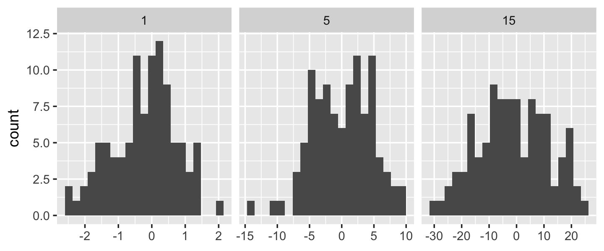

11 Function factories
11.1 Introduction
A function factory is a function that makes functions. Here’s a very simple example: we use a function factory (power1()) to make two child functions (square() and cube()):
power1 <- function(exp) {
force(exp)
function(x) {
x ^ exp
}
}
square <- power1(2)
cube <- power1(3)I’ll call square() and cube() manufactured functions, but this is just a term to ease communication with other humans: from R’s perspective they are no different to functions created any other way.
You have already learned about the individual components that make function factories possible:
In Section 6.2.1, you learned about R’s “first class” functions. In R, you bind a function to name in the same way as you bind any object to a name: with
<-.In Section 7.4.2, you learned that a function captures (encloses) the environment in which it is created.
In Section 7.4.4, you learned that a function creates a new execution environment every time it is run. This environment is usually ephemeral, but here it becomes the enclosing environment of the manufactured function.
In this chapter, you’ll learn how the non-obvious combination of these three features lead to the function factory. You’ll also see examples of their usage in visualisation and statistics.
Of the three main functional programming tools (functionals, function factories, and function operators), function factories are probably the least useful. Generally, they don’t tend to reduce overall code complexity. Instead, they tend to partition complexity into more easily digested chunks. Function factories are also an important building block for the very useful function operators, which you’ll learn about in Chapter @ref(#function-operators).
Outline
Section 11.2 begins the chapter with an explanation of how function factories work, pulling together ideas from scoping and environments. You’ll also see how function factories can be used to implement a “memory” for functions, allowing data to persist across calls.
Section 11.3 illustrates the use of function factories with examples from ggplot2. You’ll see two examples of how ggplot2 works with user supplied function factories, and one example of where ggplot2 uses a function factory internally.
Section 11.4 uses function factories to tackle three challenges from statistics: understanding the Box-Cox transform, solving maximum likelihood problems, and drawing bootstrap resamples.
Section 11.5 shows how you can combine function factories and functionals to rapidly generate a family of functions from data.
Prerequisites
Make sure you’re familiar with the contents of Sections 6.2.1 (first class functions), 7.4.2 (function environments), and 7.4.4 (execution environments) mentioned above.
Function factories only need base R. We’ll use a little rlang to peek inside of them more easily, and we’ll use ggplot2 and scales to explore the use of function factories in visualisation.
11.2 Factory fundamentals
The key idea that makes function factories work can be expressed very concisely:
The enclosing environment of the manufactured function is an execution environment of the function factory.
It only takes few words to express these big ideas, but it takes a lot more work to really understand what this means. This section will help you put the pieces together with interactive exploration and some diagrams.
11.2.1 Environments
Let’s start by taking a look at square() and cube():
square
#> function(x) {
#> x ^ exp
#> }
#> <environment: 0x7feaa1b91b98>
cube
#> function(x) {
#> x ^ exp
#> }
#> <bytecode: 0x7feaa2bb7140>
#> <environment: 0x7feaa1ba3070>Printing manufactured functions is not revealing because the bodies are identical; its the contents of the enclosing environment that’s important. We can get a little more insight by using rlang::env_print(). That shows us that we have two different environments (each of which was originally an execution environment of power()). The environments have the same parent, which is the enclosing environment of power1(), the global environment.
env_print(square)
#> <environment: 0x7feaa1b91b98>
#> parent: <environment: global>
#> bindings:
#> * exp: <dbl>
env_print(cube)
#> <environment: 0x7feaa1ba3070>
#> parent: <environment: global>
#> bindings:
#> * exp: <dbl>env_print() shows us that both environments have a binding to exp, but we want to see its value35. That’s easily done with env_get():
This is what makes manufactured functions behave differently from one another: names in the enclosing environment are bound to different values.
11.2.2 Diagram conventions
We can also show these relationships in a diagram:

There’s a lot going on this diagram and some of the details aren’t that important. We can simplify considerably by using two conventions:
Any free floating symbol lives in the global environment.
Any environment without an explicit parent inherits from the global environment.

This view, which focuses on the environments, doesn’t show any direct link between cube() and square(). That’s because the link is the through the body of the function, which is identical for both, but is not shown in this diagram.
To finish up, let’s look at the execution environment of square(10). When square() executes x ^ exp it finds x in the execution environment and exp in its enclosing environment.

11.2.3 Stateful functions
Function factories also allow you to maintain state across function invocations, which is generally hard to do because of the fresh start principle described in Section 6.3.3.
There are two things that make this possible:
The enclosing environment of the manufactured function is unique and constant.
R has a special assignment operator,
<<-, which modifies bindings in the enclosing environment.
The usual assignment operator, <-, always creates a binding in the current environment. The super assignment operator, <<- rebinds an existing name found in a parent environment.
The following example example shows how we can combine these ideas to create a function that records how many times it has been called:
new_counter <- function() {
i <- 0
function() {
i <<- i + 1
i
}
}
counter_one <- new_counter()
counter_two <- new_counter()
When the manufactured function is run i <<- i + 1 will modify i in its enclosing environment. Because manufactured functions have independent enclosing environments, they have independent counts:

Stateful functions are best used in moderation. As soon as your function starts managing the state of multiple variables, it’s better to switch to R6, the topic of Chapter 16.
11.2.4 Potential pitfalls
There are two potential pitfalls to be aware of when creating your own function factories: forgetting to evaluate all inputs and accidentally capturing large objects.
Generally, you can rely on lazy evaluation to evaluate function inputs at the right time. However, there’s a catch when it comes to function factories: if you don’t eagerly evaluate every argument, it’s possible to get confusing behaviour, as shown below.
power2 <- function(exp) {
function(x) {
x ^ exp
}
}
exp2 <- 2
square2 <- power2(exp2)
exp2 <- 3
square2(2)
#> [1] 8This is described in Section 6.4.1, and happens when a binding changes in between calling the factory function and calling the manufactured function. This is likely to only happen rarely, but when it does, it will lead to a real head-scratcher of a bug. Avoid future pain by ensuring every argument is evaluated, using force() if the argument is only used by the manufactured function.
With most functions, you can rely on the GC to clean up any large temporary objects created inside a function. However, manufactured functions hold on to the execution environment, so you’ll need to explicitly unbind any large temporary objects with rm(). Compare the sizes of g1() and g2() in the example below:
11.2.5 Exercises
Base R contains two function factories,
approxfun()andecdf(). Read their documentation and experiment to figure out what the functions do and what they return.Create a function
pick()that takes an index,i, as an argument and returns a function with an argumentxthat subsetsxwithi.Create a function that creates functions that compute the ith central moment of a numeric vector. You can test it by running the following code:
What happens if you don’t use a closure? Make predictions then, verify with the code below.
What happens if you use
<-instead of<<-? Make predictions, then verify with the code below.
11.3 Graphical factories
We’ll begin our exploration of useful function factories with a few examples from ggplot2.
11.3.1 Labelling
One of the goals of the scales package is to make it easy to customise the labels on ggplot2. It provides many functions to control the fine details of axes and legends. One useful class of functions are the formatter functions36 which which make it easier to control the appearance of axis breaks. The design of these functions might initially seem a little odd: they all return a function, which you have to call in order to format a number.
y <- c(12345, 123456, 1234567)
comma_format()(y)
#> [1] "12,345" "123,456" "1,234,567"
number_format(scale = 1e-3, suffix = " K")(y)
#> [1] "12 K" "123 K" "1 235 K"In other words, the primary interface is a function factory. At first glance, this seems to add extra complexity for little gain. But it enables a nice interaction with ggplot2’s scales, because they accept functions in the label argument:
df <- data.frame(x = 1, y = y)
core <- ggplot(df, aes(x, y)) +
geom_point() +
scale_x_continuous(breaks = 1, labels = NULL) +
labs(x = NULL, y = NULL)
core
core + scale_y_continuous(label = comma_format())
core + scale_y_continuous(label = number_format(scale = 1e-3, suffix = " K"))
core + scale_y_continuous(label = scientific_format())
11.3.2 Histogram bins
A little known feature of geom_histogram() is that the binwidth argument can be a function. This is particularly useful because the function is executed once for each group, which means you can have different binwidths in different facets, which is otherwise not possible.
To illustrate this idea, and see where variable binwidth might be useful, I’m going to construct an example where a fixed binwidth isn’t great.
# construct some sample data with very different numbers in each cell
sd <- c(1, 5, 15)
n <- 100
df <- data.frame(x = rnorm(3 * n, sd = sd), sd = rep(sd, n))
ggplot(df, aes(x)) +
geom_histogram(binwidth = 2) +
facet_wrap(~ sd, scales = "free_x") +
labs(x = NULL)Here each facet has the same number of observations, but the variability is very different. It would be nice if we could request that the binwidths vary so we get approximately the same number of observations in each bin. One way to do that is with a function factory that inputs the desired number of bins (n), and outputs a function that takes a numeric vector and returns a binwidth:
binwidth_bins <- function(n) {
force(n)
function(x) {
(max(x) - min(x)) / n
}
}
ggplot(df, aes(x)) +
geom_histogram(binwidth = binwidth_bins(20)) +
facet_wrap(~ sd, scales = "free_x") +
labs(x = NULL)
We could use this same pattern to wrap around the base R functions that automatically find the “optimal”37 binwidth, nclass.Sturges(), nclass.scott(), and nclass.FD():
base_bins <- function(type) {
fun <- switch(type,
Sturges = nclass.Sturges,
scott = nclass.scott,
FD = nclass.FD,
stop("Unknown type", call. = FALSE)
)
function(x) {
(max(x) - min(x)) / fun(x)
}
}
ggplot(df, aes(x)) +
geom_histogram(binwidth = base_bins("FD")) +
facet_wrap(~ sd, scales = "free_x") +
labs(x = NULL)11.3.3 ggsave
Finally, I want to show a function factory used internally by ggplot2. ggplot2:::plot_dev() is used by ggsave() to go from a file extension (e.g. png, jpeg etc) to a graphics device function (e.g. png(), jpeg()). The challenge here arises because the base graphics devices have some minor inconsistencies which we need to paper over:
Most have
filenameas first argument but some havefile.The
widthandheightof raster graphic devices use pixels units by default, but the vector graphics use inches.
A mildly simplified version of plot_dev() is shown below:
plot_dev <- function(ext, dpi = 96) {
force(dpi)
switch(ext,
eps = ,
ps = function(filename, ...) {
grDevices::postscript(
file = filename, ..., onefile = FALSE,
horizontal = FALSE, paper = "special"
)
},
tex = function(filename, ...) grDevices::pictex(file = filename, ...),
pdf = function(filename, ...) grDevices::pdf(file = filename, ...),
svg = function(filename, ...) svglite::svglite(file = filename, ...),
emf = ,
wmf = function(...) grDevices::win.metafile(...),
png = function(...) grDevices::png(..., res = dpi, units = "in"),
jpg = ,
jpeg = function(...) grDevices::jpeg(..., res = dpi, units = "in"),
bmp = function(...) grDevices::bmp(..., res = dpi, units = "in"),
tiff = function(...) grDevices::tiff(..., res = dpi, units = "in"),
stop("Unknown graphics extension: ", ext, call. = FALSE)
)
}
plot_dev("pdf")
#> function(filename, ...) grDevices::pdf(file = filename, ...)
#> <bytecode: 0x7feaa6e2d5e8>
#> <environment: 0x7feaa3442580>
plot_dev("png")
#> function(...) grDevices::png(..., res = dpi, units = "in")
#> <bytecode: 0x7feaa81d21c0>
#> <environment: 0x7feaa633d068>11.3.4 Exercises
- Compare and contrast
ggplot2::label_bquote()withscales::number_format()
11.4 Statistical factories
More motivating examples for function factories come from statistics:
- The Box-Cox transformation.
- Bootstrap resampling.
- Maximum likelihood estimation.
All of these examples can be tackled without function factories, but I think function factories are a good fit for these problems and provide elegant solutions. These examples expect some statistical background, so feel free to skip if they don’t make much sense to you.
11.4.1 Box-Cox transformation
The Box-Cox transformation is a flexible transformation often used to transform data towards normality. It has a single parameter, \(\lambda\) which controls the strength of the transformation. We could express the transformation as a simple two argument function:
boxcox1 <- function(x, lambda) {
stopifnot(length(lambda) != 1)
if (lambda == 0) {
log(x)
} else {
(x ^ lambda - 1) / lambda
}
}But re-formulating as a function factory makes it easy to explore its behaviour with stat_function():
boxcox2 <- function(lambda) {
if (lambda == 0) {
function(x) log(x)
} else {
function(x) (x ^ lambda - 1) / lambda
}
}
stat_boxcox <- function(lambda) {
stat_function(aes(colour = lambda), fun = boxcox2(lambda), size = 1)
}
ggplot(data.frame(x = c(0, 5)), aes(x)) +
lapply(c(0.5, 1, 1.5), stat_boxcox) +
scale_colour_viridis_c(limits = c(0, 1.5))
# visually, log() does seem to make sense as the limit as lambda -> 0
ggplot(data.frame(x = c(0.01, 1)), aes(x)) +
lapply(c(0.5, 0.25, 0.1, 0), stat_boxcox) +
scale_colour_viridis_c(limits = c(0, 1.5))In general, this allows you to use a Box-Cox transformation with any function that accepts a unary transformation function: you don’t have to worry about that function providing ... to pass along additional arguments. I also think that the partitioning of lambda and x into two different function arguments is natural since lambda plays quite a different role than x.
11.4.2 Bootstrap generators
Function factories are a useful approach for bootstrapping. Instead of thinking about a single bootstrap (you always need more than one!), you can think about a bootstrap generator, a function that yields a fresh bootstrap every time it is called:
boot_permute <- function(df, var) {
n <- nrow(df)
force(var)
function() {
df[[var]][sample(n, n, replace = TRUE)]
}
}
boot_mtcars1 <- boot_permute(mtcars, "mpg")
head(boot_mtcars1())
#> [1] 18.1 22.8 21.5 14.7 21.4 17.3
head(boot_mtcars1())
#> [1] 19.2 19.2 14.3 21.0 13.3 21.4The advantage of a function factory is more clear with a parametric bootstrap where we have to first fit a model. We can do this setup step once, when the factory is called, rather than once every time we generate the bootstrap:
boot_model <- function(df, formula) {
mod <- lm(formula, data = df)
fitted <- unname(fitted(mod))
resid <- unname(resid(mod))
rm(mod)
function() {
fitted + sample(resid)
}
}
boot_mtcars2 <- boot_model(mtcars, mpg ~ wt)
head(boot_mtcars2())
#> [1] 23.1 24.3 23.0 19.1 19.1 16.2
head(boot_mtcars2())
#> [1] 30.2 17.4 31.3 26.1 17.8 16.7I use rm(mod) because linear model objects are quite large (they include complete copies of the model matrix and input data) and I want to keep the manufactured function as small as possible.
11.4.3 Maximum likelihood estimation
The goal of maximum likelihood estimation (MLE) is to find the parameter values for a distribution that make the observed data “most likely”. To do MLE, you start with a probability function. For example, take the Poisson distribution. If we know \(\lambda\), we can compute the probability of getting a vector \(\mathbf{x}\) of values (\(x_1\), \(x_2\), …, \(x_n\)) by multiplying the Poisson probability function as follows:
\[ P(\lambda, \mathbf{x}) = \prod_{i=1}^{n} \frac{\lambda ^ {x_i} e^{-\lambda}}{x_i!} \]
In statistics, we almost always work with the log of this function. The log is a monotonic transformation which preserves important properties (i.e. the extrema occur in the same place), but has specific advantages:
The log turns a product into a sum, which is easier to work with.
Multiplying small numbers yields even smaller numbers, which makes the floating point approximation used by a computer less accurate.
Let’s apply a log transformation to this probability function and simplify it as much as possible:
\[ \log(P(\lambda, \mathbf{x})) = \sum_{i=1}^{n} \log(\frac{\lambda ^ {x_i} e^{-\lambda}}{x_i!}) \]
\[ \log(P(\lambda, \mathbf{x})) = \sum_{i=1}^{n} \left( x_i \log(\lambda) - \lambda - \log(x_i!) \right) \]
\[ \log(P(\lambda, \mathbf{x})) = \sum_{i=1}^{n} x_i \log(\lambda) - \sum_{i=1}^{n} \lambda - \sum_{i=1}^{n} \log(x_i!) \]
\[ \log(P(\lambda, \mathbf{x})) = \log(\lambda) \sum_{i=1}^{n} x_i - n \lambda - \sum_{i=1}^{n} \log(x_i!) \]
We can now turn this function into an R function. The R function is quite elegant because R is vectorised and, because it’s a statistical programming language, R comes with built-in functions like the log-factorial (lfactorial()).
lprob_poisson <- function(lambda, x) {
n <- length(x)
(log(lambda) * sum(x)) - (n * lambda) - sum(lfactorial(x))
}Consider this vector of observations:
We can use lprob_poisson() to compute the (logged) probability of x1 for different values of lambda.
lprob_poisson(10, x1)
#> [1] -184
lprob_poisson(20, x1)
#> [1] -61.1
lprob_poisson(30, x1)
#> [1] -31So far we’ve been thinking of lambda as fixed and known and the function told us the probability of getting different values of x. But in real-life, we observe x and it is lambda that is unknown. The likelihood is the probability function seen through this lens: we want to find the lambda that makes the observed x the “most likely”. That is, given x, what value of lambda gives us the highest value of lprob_poisson()?
In statistics, we highlight this change in perspective by writing \(f_\mathbf{x}(\lambda)\) instead of \(f(\lambda, \mathbf{x})\). In R, we can use a function factory. We provide x and generate a function with a single parameter, lambda:
ll_poisson1 <- function(x) {
n <- length(x)
function(lambda) {
log(lambda) * sum(x) - n * lambda - sum(lfactorial(x))
}
}One nice thing about this approach is that we can do some precomputation: any term that only involves x can be computed once in the factory. This is useful because we’re going to need to call this function many times to find the best lambda.
ll_poisson2 <- function(x) {
n <- length(x)
sum_x <- sum(x)
c <- sum(lfactorial(x))
function(lambda) {
log(lambda) * sum_x - n * lambda - c
}
}Now we can use this function to find the value of lambda that maximizes the (log) likelihood:
Rather than trial and error, we can automate the process of finding the best value with optimise(). It will evaluate ll1() many times, using mathematical tricks to narrow in on the largest value as quickly as possible. The results tell us that the highest value is -30.27 which occurs when lambda = 32.1:
Now, we could have solved this problem without using a function factory because optimise() passes ... on to the function being optimised. That means we could use the log-probability function directly:
optimise(lprob_poisson, c(0, 100), x = x1, maximum = TRUE)
#> $maximum
#> [1] 32.1
#>
#> $objective
#> [1] -30.3The advantage of using a function factory here is fairly small, but there are two niceties:
We can precompute some values in the factory itself, saving computation time in each iteration.
I think the two-level design better reflects the mathematical structure of the underlying problem.
These advantages get bigger in more complex MLE problems, where you have multiple parameters and multiple data vectors.
11.4.4 Exercises
In
boot_model(), why don’t I need to force the evaluation ofdformodel?Why might you formulate the Box-Cox transformation like this?
Why don’t you need to worry that
boot_permute()stores a copy of the data inside the function that it generates?How much time does
ll_poisson2()save compared toll_poisson1(). Usebench::mark()to see how much faster the optimisation occurs. How does changing the length ofxchange the results?
11.5 Function factories + functionals
To finish off the chapter, I’ll show how you might combine functionals and function factories to turn data into many functions. The following code creates many specially named power functions by iterating over a list of arguments:
names <- list(
square = 2,
cube = 3,
root = 1/2,
cuberoot = 1/3,
reciprocal = -1
)
funs <- purrr::map(names, power1)
funs$root(64)
#> [1] 8
funs$root
#> function(x) {
#> x ^ exp
#> }
#> <bytecode: 0x7feaa2bb7140>
#> <environment: 0x7feaa2a57800>This idea extends in a straightforward way if your function factory takes two (replace map() with map2()) or more (replace with pmap()) arguments.
11.5.1 Moving a lists to the global environment
One downside of the current construction is that you have to prefix every function call with funs$. There are three ways to eliminate this additional syntax:
For a very temporary effect, you can use
with():I recommend this because it makes it very clear when code is being executed in a special context and what that context is.
For a longer effect, you can
attach()the functions to the search path, thendetach()when you’re done:attach(funs) #> The following objects are masked _by_ .GlobalEnv: #> #> cube, square root(100) #> [1] 10 detach(funs)You’ve probably been told to avoid using
attach(), and that’s generally good advice. However, the situation is a little different to the usual because we’re attaching a list functions, not a data frame. It’s less likely that you’ll modify a function than a column in a data frame, so the some of the worst problems withattach()don’t apply.Finally, you could copy the functions to the global environment with
env_bind(). This is mostly permanent:You can later unbind those same names, but there’s no guarantee that they haven’t been rebound in the meantime, and you might be deleting an object that someone else created.
11.5.2 Another approach
You’ll learn an alternative approach to the same problem in Section 19.6.4. Instead of using a function factory, you could construct the function with quasiquotation. This requires additional knowledge, but generates functions with readable bodies, and avoids accidentally capturing large objects in the enclosing scope. The following code is a quick preview of how we could rewrite power1() to use quasiquotation:
power3 <- function(exponent) {
new_function(
exprs(x = ),
expr({
x ^ !!exponent
}),
caller_env()
)
}
funs <- purrr::map(names, power3)
funs$root
#> function (x)
#> {
#> x^0.5
#> }
#> <environment: 0x7feaa891e110>As well as 0.5 appearing directly in the body, note that the environment of the function is the global environment, not an execution environment of power3().
11.5.3 Exercises
Which of the following commands is equivalent to
with(x, f(z))?x$f(x$z).f(x$z).x$f(z).f(z).- It depends.
Compare and contrast the effects of
env_bind()vs.attach()for the following code.funs <- list( mean = function(x) mean(x, na.rm = TRUE), sum = function(x) sum(x, na.rm = TRUE) ) attach(funs) #> The following objects are masked from package:base: #> #> mean, sum mean <- function(x) stop("Hi!") detach(funs) env_bind(globalenv(), !!!funs) mean <- function(x) stop("Hi!") env_unbind(globalenv(), names(funs))
A future version of
env_print()is likely to do better at summarising the contents so you don’t need this step.↩It’s an unfortunate accident of history that scales uses function suffixes instead of function prefixes. That’s because it was written before I understood the autocomplete advantages to using common prefixes instead of common suffixes.↩
ggplot2 doesn’t expose these functions directly because I don’t think the defintion of optimality needed to make the problem mathematically tractable is a good match to the actual needs of data exploration.↩